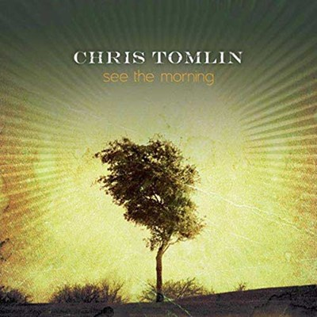
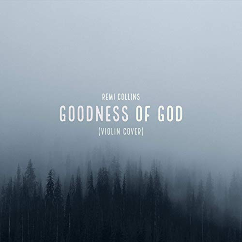
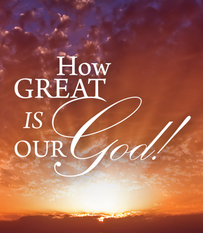
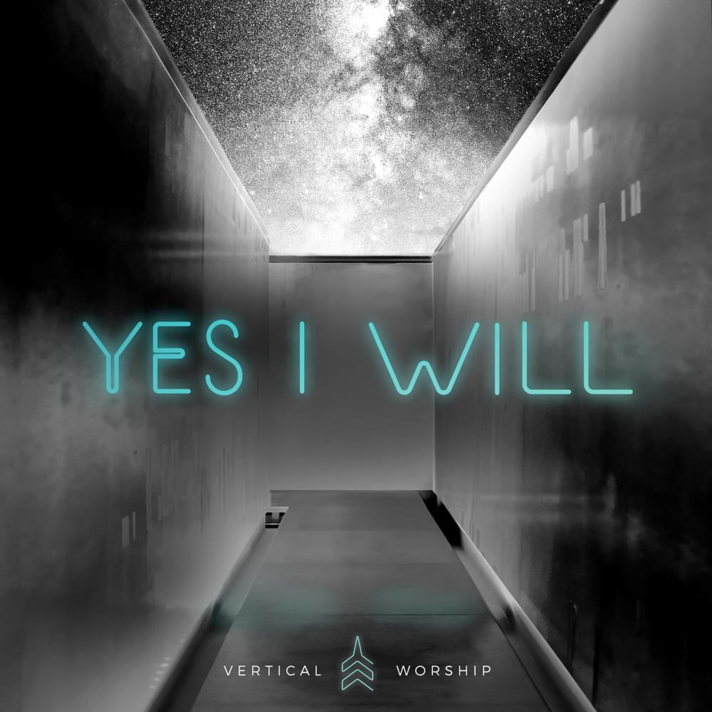
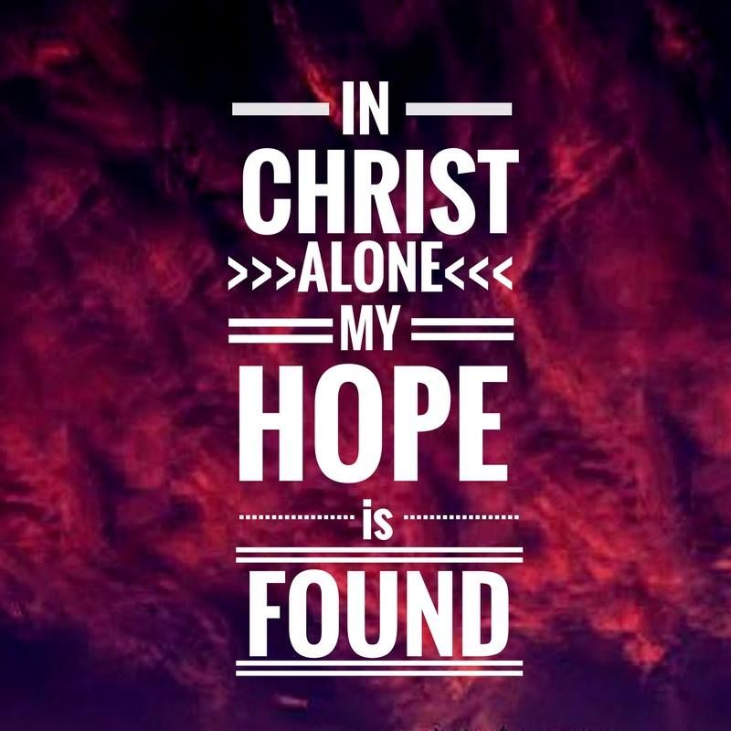
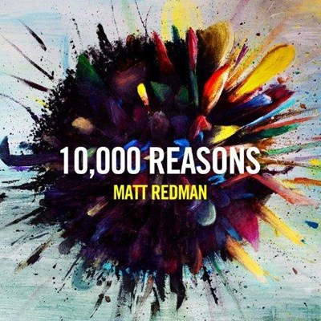
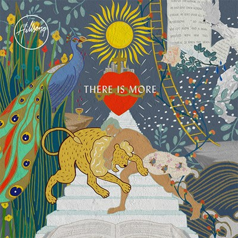
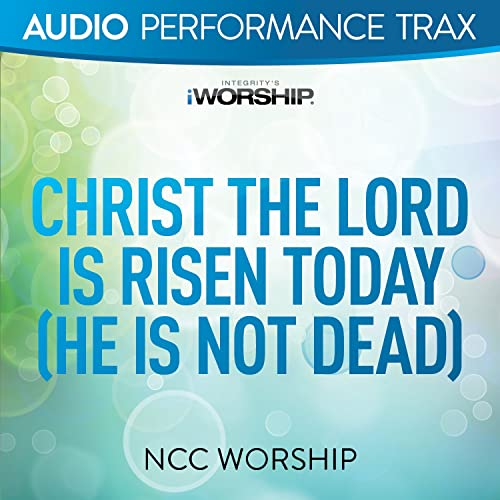
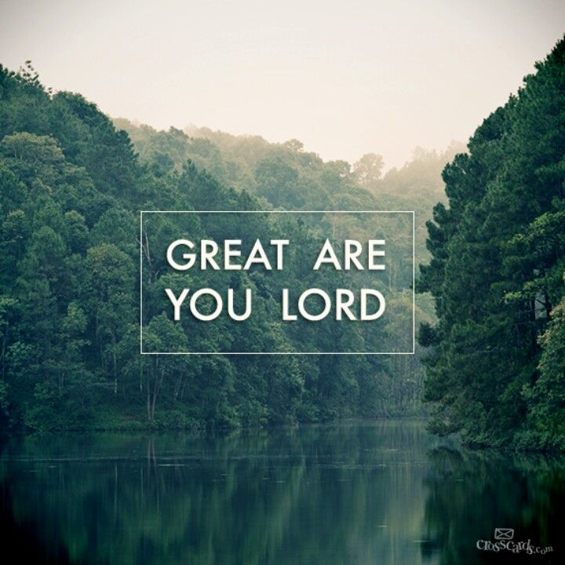

Keys: A , Bb , C , D , Eb First line: How great the chasm that lay between us. Duration: 5:23 Tempo: Slow Tags: Tags: Jesus, His Love/Mercy/Grace , Redemption/Salvation/Atonement , Jesus, Savior , Jesus, Resurrection
King Of Kings - Travis Cottrell feat. Lily Cottrel
Keys: D , Eb First line: In the darkness we were waiting Duration: 4:56 Tempo: Slow Tags: Jesus, King , Redemption/Salvation/Atonement , Trinity , Praise/Adoration/Worship/Exaltation, of God , Jesus, Resurrection , Jesus, Cross
Passion - Way Maker
Keys: D B , C , D First line: D You are here moving in our midst. Duration: D5:07 Tempo: D Slow Tags: D Assurance/Security/Confidence/Rest , God, His Love/Mercy/Grace , God, His Guidance and Care , Comfort/Encouragement/Hope , God, Our Refuge/Shelter/Rock/Shield/Stronghold , Healing
Andrew Peterson - Is He Worthy?
Keys: B , C , D First line: Do you feel the world is broken? Duration: 4:34 Tempo: Slow Tags: Jesus, Lamb of God , Comfort/Encouragement/Hope , Praise/Adoration/Worship/Exaltation, of Jesus , God, His Glory , Eternal Life/Heaven
Phil Wickham - Great Things
Keys: A , B , F , G First line: Come, let us worship our King. Duration: 4:50 Tempo: Medium Tags: Praise/Adoration/Worship/Exaltation, of God , God, His Guidance and Care , Jesus, Savior , God, His Faithfulness , God, His Greatness
Passion - Build My Life
Keys: Eb , F , G First line: Worthy of every song we could ever sing Duration: 5:53 Tempo: Slow Tags: Praise/Adoration/Worship/Exaltation, of Jesus , God, His Love/Mercy/Grace , God, His Holiness , God, His Name , Faith/Trust , God, His Presence
Chris Tomlin - Amazing Grace

Keys: All , D , Eb First line: Amazing grace, how sweet the sound that saved a wretch like me Duration: 4:28 Tempo: Slow Hymn Number: 767 Tags: God, His Love/Mercy/Grace , Forgiveness , Deliverance/Freedom
Jenn Johnson - Goodness Of God

Keys: Ab , A , Bb , G First line: I love You, Lord, oh, Your mercy never fails me Duration: 4:48 Tempo: Slow Tags: God, His Goodness , God, His Faithfulness , God, His Guidance and Care
How Great Is Our God - I

Keys: All , A , Bb First line: The splendor of the King clothed in majesty Duration: 03:35 Tempo: Medium Hymn Number: 5 Tags: Praise/Adoration/Worship/Exaltation, of God , God, His Majesty/Glory , Praise/Adoration/Worship/Exaltation, of Jesus , Jesus, King , God, Attributes Of
Vertical Worship - Yes I Will

Keys: A , Bb , C , G First line: I count on one thing: The same God who never fails Duration: 3:55 Tempo: Slow Tags: Comfort/Encouragement/Hope , Assurance/Security/Confidence/Rest , God, His Faithfulness , Praise/Adoration/Worship/Exaltation, of God , Declaration/Proclamation of Faith
In Christ Alone (My Hope Is Found) - II

Keys: All , D First line: In Christ alone my hope is found; He is my light, my strength, my song. Duration: 03:59 Tempo: Slow Hymn Number: 718 Tags: Comfort/Encouragement/Hope , Assurance/Security/Confidence/Rest , Jesus, His Love/Mercy/Grace , Jesus, Cross , Jesus, His Power
10,000 Reasons - Matt Redman

Keys: All , Eb , E First line: Bless the Lord, O my soul, O my soul, worship His holy name. Duration: 5:34 Tempo: Slow Hymn Number: 1168 Tags: Praise/Adoration/Worship/Exaltation, of God , God, His Love/Mercy/Grace , God, Attributes Of
Who You Say I Am - Hillsong Worship

Keys: Ab , A , Gb , G First line: Who am I that the highest King would welcome me? Duration: 3:18 Tempo: Medium Tags: Jesus, His Love/Mercy/Grace , Declaration/Proclamation of Faith , Deliverance/Freedom , Priesthood Of The Believer
The Power of the Cross (Oh, to See the Dawn) - I
Keys: Bb First line: Oh, to see the dawn of the darkest day Duration: 5:04 Tempo: Slow Hymn Number: 232 Tags: Jesus, Cross
Kari Jobe - Revelation
Keys: All , C , D First line: Worthy is the Lamb who was slain; Holy, holy is He. Duration: 5:50 Tempo: Slow Hymn Number: 978 Tags: God, Eternal , God, His Holiness , God, His Power
NCC Worship - Christ the Lord Is Risen Today

Keys: Bb , C First line: Christ the Lord is risen today, Alleluia! Duration: 3:24 Tempo: Medium Hymn Number: 1355 Tags: , Joy , Jesus, Resurrection
Shane & Shane - He Will Hold Me Fast
Keys: A , Bb , E , G First line: When I fear my faith will fail Duration: 5:16 Tempo: Slow Tags: God, His Guidance and Care , Comfort/Encouragement/Hope , Assurance/Security/Confidence/Rest
Blessed Be Your Name - I
Keys: All , A , Bb First line: Blessed be Your name in the land that is plentiful Duration: 03:59 Tempo: Fast Hymn Number: 26 Tags: Praise/Adoration/Worship/Exaltation, of God , Thankfulness
All Sons & Daughters - Great Are You Lord

Keys: E , F First line: You give life. You are love. You bring light to the darkness. Duration: 4:55 Tempo: Medium Tags: God, His Greatness , God, His Presence , Holy Spirit
Air Supply - Just As I Am
Keys: All , A , Bb First line: Just as I am, without one plea Duration: 05:07 Tempo: Slow Hymn Number: 1281 Tags: Confession/Repentance/Humility/Conviction , Surrender/Submission , Commitment/Consecration/Devotion

.jpg)

.jpg)